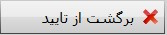

بایگانی و مدیریت اسناد مثبته
بایگانی و مدیریت اسناد مثبته یک بخش مدیریتی می باشد،
در نرم افزار سایان سیستم های خرید و فروش، خزانه داری،
حسابداری انبار، دارایی ثابت و اموال، حقوق دستمزد و کنترل
بهای تمام شده دارای سند حسابداری خودکار می باشند،
یعنی هنگامی که در این سیستم ها عملیات مورد نظرتان را
ثبت می کنید نرم افزار سایان به صورت خودکار برای
عملیات مذکور سند حسابداری صادر می کند، این سند های
حسابداری به بخش مدیریت اسناد مثبته ارسال می شوند
باید توجه داشته باشید که سند های حسابداری خودکار
در بخش الگوی صدور اسناد قابل تنظیم هستند.
همچنین در تب دوم صفحه ی تنظیمات حسابداری می توانید
اجازه ی صدور سند حسابداری را از سایر سیستم ها سلب کنید
برای آگاهی بیشتر راهنمای بخش
صفحه ی تنظیمات حسابداری
را مطالعه کنید.
تصویر زیر صفحه ی بایگانی و مدیریت اسناد مثبته را نمایش می دهد:

در تصویر بالا چهار کادر مشاهده می کنید که در زیر
به شرح هر یک می پردازیم :
کادر شماره 1:
 :
اگر دوره های مالی مختلف داشته باشید می توانید با
انتخاب دوره مالی مورد نظر از این قسمت لیست
اسناد صادر شده در آن دوره را مشاهده کنید.
:
اگر دوره های مالی مختلف داشته باشید می توانید با
انتخاب دوره مالی مورد نظر از این قسمت لیست
اسناد صادر شده در آن دوره را مشاهده کنید.
 :
برای آن که بتوانید فقط اسناد صادر شده در یک بازه زمانی خاص
را مشاهده کنید می توانید از این قسمت بازه دلخواه را
انتخاب کرده و اسناد مرتبط با آن بازه را مشاهده نمایید.
:
برای آن که بتوانید فقط اسناد صادر شده در یک بازه زمانی خاص
را مشاهده کنید می توانید از این قسمت بازه دلخواه را
انتخاب کرده و اسناد مرتبط با آن بازه را مشاهده نمایید.

در تصویر بالا اگر «دارای سند» را انتخاب کنید
اسنادی که از سوی سیستم های دیگر به صورت خودکار
ثبت و ارسال شده اند در کادر شماره ی سه به نمایش در می آیند
و اگر «فاقد سند» را انتخاب کنید اسنادی که برای
آنها سند حسابداری خودکار محاسبه نشده است به نمایش در می آید.
کادر شماره 2:
در این کادر سیستم هایی که دارای سند حسابداری خودکار می باشند
را مشاهده می کنید، اگر هر یک از این سیستم ها را انتخاب کنید
سند های خودکار ثبت و ارسال شده از سوی سیستم مربوطه را
می توانید در کادر شماره ی سه مشاهده کنید.
کادر شماره 3:
هنگامی که در کادر شماره ی یک دوره ی مالی، بازه ی زمانی و
وضعیت سند را تعیین می کنید، و از کادر شماره ی دو سیستم مورد
نظر را انتخاب می کنید در کادر شماره ی سه سند های مد نظر شما نمایان می شوند.
کادر شماره 4:
کادر شماره ی چهار شامل پنج گزینه می باشد که در زیر
به شرح هر یک می پردازیم:

اگر از کادر شماره ی سه سندی را انتخاب کنید
با کلیک بر روی گزینه ی باز
کردن می توانید سند عملیات مربوطه را مشاهده کنید.

اسناد موجود در کادر شماره ی سه از سوی سیستم هایی که دارای سند خودکار
می باشند ارسال شده اند، شما می توانید این اسناد صادر شده را بازگشت دهید
برای بازگشت دادن اسناد اگر سند در وضعیت تایید شده باشد ابتدا باید از حالت تایید
خارج شود که این امر در قسمت بایگانی و مدیریت اسناد حسابداری صورت می گیرد، در مرحله ی بعد
باید سند حسابداری مربوط به آن حذف شود، وقتی سند حسابداری حذف شد
باید از کادر شماره ی یک وضعیت سند را در حالت فاقد سند قرار دهید،
در این مرحله می توانید آیتم مورد نظر خود را در کادر شماره ی سه مشاهده کنید.

اگر از کادر شماره ی یک وضعیت سند را در حالت فاقد سند قرار دهیم
در کادر شماره ی سه عملیات ارسال شده از سوی سیستم های دیگر که فاقد
سند حسابداری می باشند نمایان می شوند، با انتخاب این عملیات و
کلیک بر روی محاسبه ی سند اگر الگوی سند حسابداری تنظیم باشد
برای عملیات انتخاب شده سند حسابداری صادر می شود.

ابتدا باید در کادر شماره ی یک وضعیت سند در حالت دارای سند باشد
سپس با انتخاب آیتم مورد نظر خود از کادر شماره ی سه و کلیک بر
روی این گزینه می توانید سند حسابداری مربوطه را مشاهده کنید،
همچنین اگر سند مورد نظر را از حالت تایید خارج کنید در این قسمت
امکان ویرایش و حذف سند نیز وجود دارد.

برای حذف کردن یک سند حسابداری ابتدا سند باید از حالت تایید خارج شود
که این امر از قسمت بایگانی و مدیریت اسناد حسابداری صورت می گیرد
بعد از برگشت از تایید با انتخاب آیتم مورد نظر خود از کادر شماره ی سه
و کلیک بر روی گزینه ی حذف سند حسابداری می توانید سند را حذف کنید.